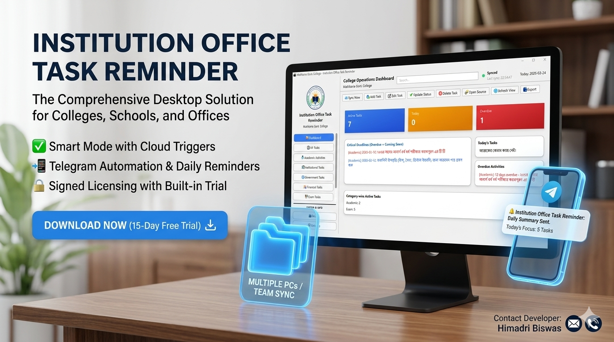

Manage Institutional Tasks with Confidence
Institution Office Task Reminder is a powerful desktop software designed for colleges, schools, offices, and institutions to manage tasks, deadlines, reminders, and synchronized workflow in a simple and reliable way.

Replace with hero-banner.png
Deadline Tracking
Never miss an important institutional deadline again with real-time overdue indicators.
Multi-User Ready
Multiple users can work with the same institutional data through synchronized workflow.
Secure Licensing
Signed commercial licensing for controlled and secure institutional deployment.
Offline-First
Works reliably even in low-connectivity environments with local data caching.
What is Institution Office Task Reminder?
Institution Office Task Reminder is a Windows desktop application built to help educational institutions, offices, and organizations manage official tasks, deadlines, reminders, and follow-up activities in an organized way.
The software supports role-based access, synchronized task updates, reminders, and an offline-first workflow that remains practical even in low-connectivity environments — making it genuinely suitable for real institutional deployments.
Explore All Features →
Built for Institutional Excellence
Everything your office or institution needs — in one reliable desktop application.
Dashboard Overview
See active tasks, overdue items, and category-wise distribution at a glance through one clear operational dashboard.

Role-Based Access
Admin, Editor, and Viewer roles keep your institutional workflow safe, structured, and accountable.

Built-in 15-Day Trial
Start using the software immediately after installation. A 15-day trial activates automatically — no manual setup needed.
Who is this software for?
Designed specifically for institutional and educational office workflows across Bangladesh and beyond.
Colleges and educational institutions
School administrative offices
Government and semi-government offices
Academic coordinators and exam sections
Administrative departments
Multi-user institutional teams
More Than a Simple To-Do List
The Problem It Solves
Many institutions still rely on notebooks, scattered files, and verbal reminders to manage important tasks. As a result, deadlines get missed, follow-up becomes weak, and coordination breaks down.
Institution Office Task Reminder gives institutions a central, organized, and easy-to-use task reminder system — purpose-built for office and educational workflows.